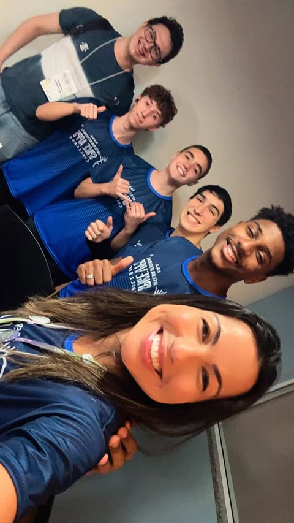

Como funciona
- Escolha um asteroide: selecione da nossa base com dados públicos da NASA
- Defina o local de impacto: clique no mapa para posicionar o evento.
- Veja os resultados: o Astrodyn exibe zonas de dano e estimativas aproximadas para aquele local.
De acordo com o ponto selecionado no mapa, calculamos de forma aproximada os impactos econômico, social e ambiental daquela ação, com faixas de incerteza visíveis.
O que você vai ver
- Zonas de dano: áreas que foram destruidas pelo impacto do meteorito
- Estimativas rápidas: ordens de grandeza de população e infraestrutura potencialmente afetadas (hospitais, escolas, vias).
- Notas de incerteza: deixamos claro que são faixas aproximadas, não uma simulação física detalhada.
Benefícios do Astrodyn
- Simples e direto: visualize cenários em segundos, sem fórmulas.
- Didático: ideal para aulas, feiras de ciência e projetos de pesquisa inicial.
- Contextual: estimativas por local, com população e infraestrutura afetadas.
- Dimensões integradas: visão consolidada dos efeitos econômicos, sociais e ambientais.
- Transparente: regras de estimativa claras e notas de incerteza visíveis.
- Leve e acessível: funciona no navegador, sem instalação.
Quem somos nós
O Astrodyn é desenvolvido por Daniel Vergara, Felipe Murtinho, Gabriel Ferreira e Francisco Carvalho. Nosso objetivo é apoiar estudantes, cientistas e gestores na compreensão dos impactos de meteoros — incluindo possíveis efeitos ambientais, sociais e econômicos — com uma experiência simples, didática e baseada em dados públicos.
Além de mapear zonas de dano, o Astrodyn estimativa, de acordo com o local escolhido no mapa, os impactos econômico, social e ambiental de forma aproximada para apoiar análise de risco e tomada de decisão.
Projeto participante do NASA Space Apps Challenge.
